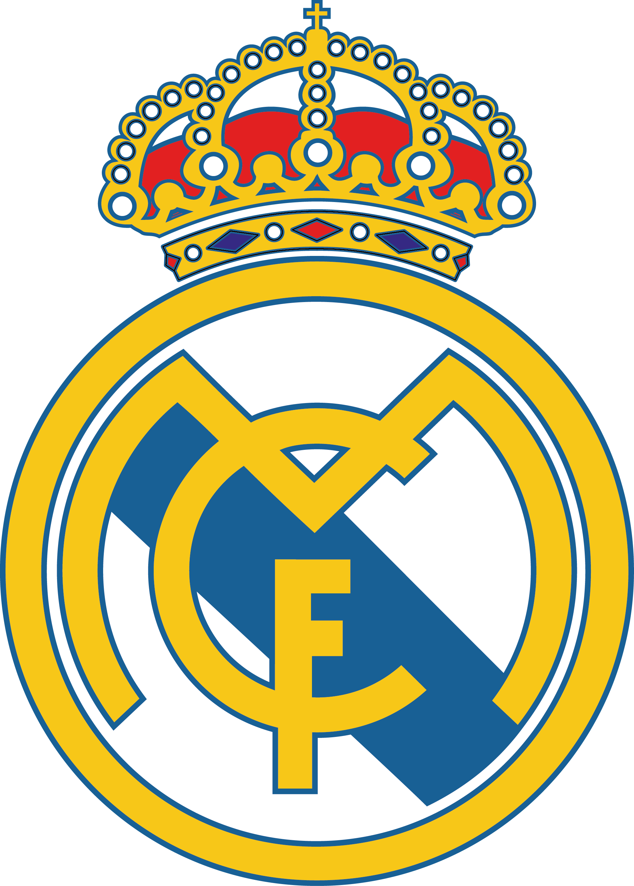

Real Madrid commonly referred to as Real Madrid, is a Spanish professional football club based in Madrid, Spain. The club compete in La Liga, the top tier of Spanish football. Founded in 1902 as Madrid Football Club, the club have traditionally worn a white home kit. The honorific title real is Spanish for "royal" and was given by King Alfonso XIII in 1920, as well as the crown being added to the club crest. Real Madrid have played their home matches in the 85,000-capacity Santiago Bernabéu Stadium in Madrid since 1947. Unlike most European football clubs, Real Madrid's members have owned and operated the club throughout its history. Its anthem is the "Hala Madrid y nada más".[9]
If you want to find more about Real Madrid click the button bellow
